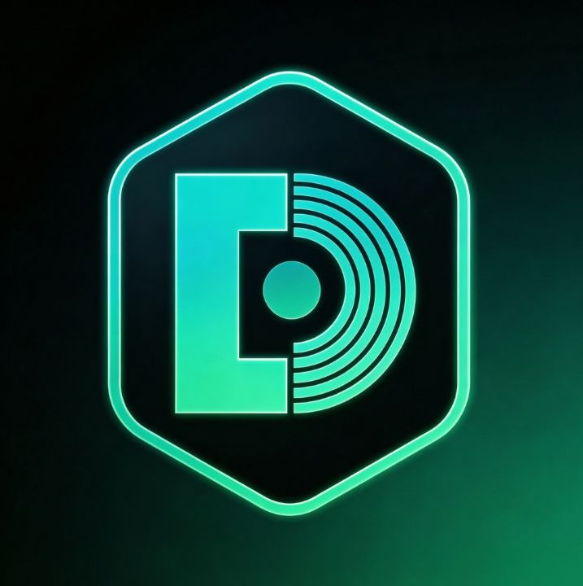

轻量级磁盘数据管理与可视化工具
输入要展开的条目数量（当前合并的尾部项目）
扫描系统临时文件和缓存，选择要清理的项目
查看并启用/禁用登录启动项、资源管理器插件、IE 加载项
扫描已安装程序、进程、可疑文件、启动项，AI 判断可疑项（右键可打开文件所在位置）
AI 分析各软件缓存位置，勾选后清理（右键可打开文件所在位置，可以手动清理）
追踪文件夹大小变化，对比新增、删除、变化的子文件
点击启动对应的系统设置界面
此文件夹为空
选择厂商、输入 API Key，获取并选择要添加的模型